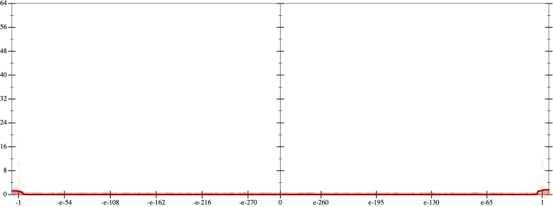
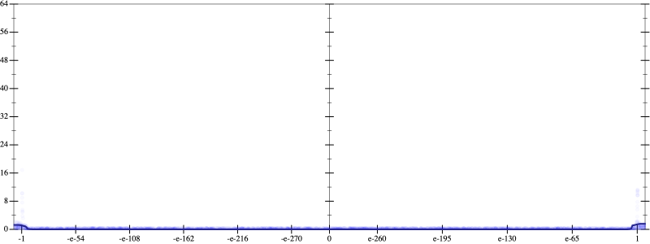
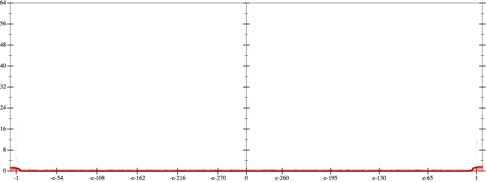
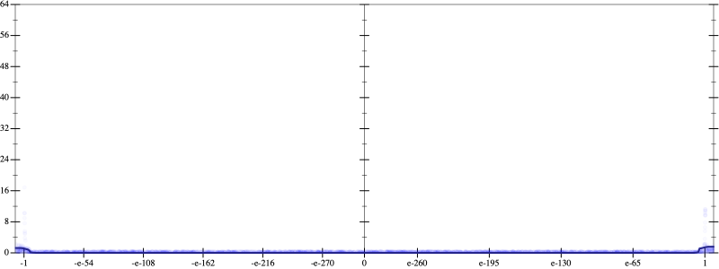
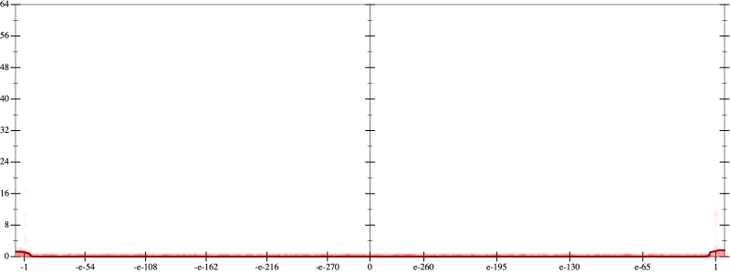
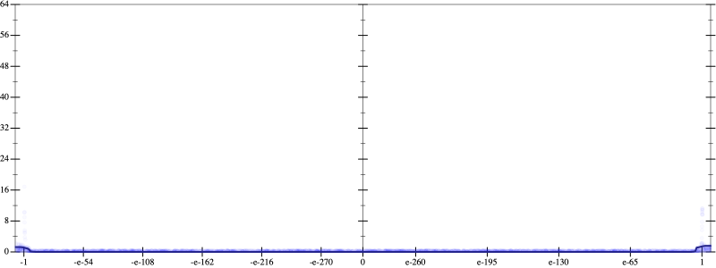

Error
 
Bits error versus x
Bits error versus x
Results
Initial program 0.0
Time bar (total: 52.8s)Debug log
herbie shell --seed 1413584410
(FPCore (x)
:name "12"
:pre (and (>= x -100000000.0) (<= x 100000000.0))
(+ (+ (+ (+ (+ (+ 0.225586 (* -17.595703 (* x x))) (* 219.946289 (* (* (* x x) x) x))) (* -997.089844 (* (* (* (* (* x x) x) x) x) x))) (* 2029.790039 (* (* (* (* (* (* (* x x) x) x) x) x) x) x))) (* -1894.470703 (* (* (* (* (* (* (* (* (* x x) x) x) x) x) x) x) x) x))) (* 660.194336 (* (* (* (* (* (* (* (* (* (* (* x x) x) x) x) x) x) x) x) x) x) x))))